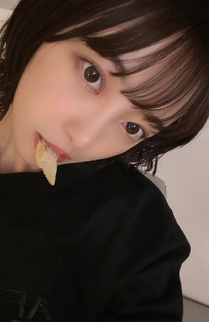

2020/0729Wed夏の星座がみたい
こんばんは！

なんかちょっとかなしげな顔

夏の星座ってなにがありますか？
地元ではホタルがたくさんいて
綺麗だったなぁ
またたくさんのホタルを見たいです
2nd写真集公式Twitter
で突然ですが
堀未央奈が彼女だったら
連載はじめました〜
写真集の裏テーマが彼女感なので
彼氏目線の動画を自作自演で
あげていこうと思います
どんなのがみたいですか？
教えてください^ - ^


※服に犬の毛が付きすぎてたのでモザイクしました
今日はポテチが出てきてるよ〜
みてね〜
ps.
真夏さんちゃっかりわたしの
ブログみてるのカワイイ^ - ^
なめてるでしょ！とかいつも
言ってくるけど今日もずっと
隣でニコニコゲラゲラ
たのしそうでした^ - ^笑
わたしのこと好きやなあ^ - ^

では！
2020/07/29 21:06
コメント(301)
ブログ更新ありがとう
ホタル、私の地元にもたくさんいます。秋田は田舎だけど空気が綺麗で食べ物も美味しいから、いつか未央奈ちゃんにも絢音ちゃんの故郷秋田に遊びに来て欲しい笑 Twitterの動画も、めっちゃ可愛かったー！私は高校生で学生なので、未央奈ちゃんが先生っていう設定で応援してもらいたい…っていうのが理想かな。でも、どんな未央奈ちゃんも可愛いから何でも良いよ！まなっちゃんとも相変わらず仲良し 体調に気を付けてお仕事頑張ってね！応援してます。ネイル素敵‼︎ 今日も大好きです。
体調に気を付けてお仕事頑張ってね！応援してます。ネイル素敵‼︎ 今日も大好きです。
ホタル、私の地元にもたくさんいます。秋田は田舎だけど空気が綺麗で食べ物も美味しいから、いつか未央奈ちゃんにも絢音ちゃんの故郷秋田に遊びに来て欲しい笑 Twitterの動画も、めっちゃ可愛かったー！私は高校生で学生なので、未央奈ちゃんが先生っていう設定で応援してもらいたい…っていうのが理想かな。でも、どんな未央奈ちゃんも可愛いから何でも良いよ！まなっちゃんとも相変わらず仲良し
彼女目線同性の私まで可愛い可愛い！と
思ってしまうほど可愛いよ〜！！
して欲しい彼女目線か〜、
ゲーム(or漫画)してるところに話しかけられた時の
"もう！！いいところなのに！"みたいなのやって欲しいな
絶対可愛い！！！！！=(^.^ )=
思ってしまうほど可愛いよ〜！！
して欲しい彼女目線か〜、
ゲーム(or漫画)してるところに話しかけられた時の
"もう！！いいところなのに！"みたいなのやって欲しいな
絶対可愛い！！！！！=(^.^ )=
堀ちゃん、ブログ更新ありがとう〜
堀ちゃん、お美しいです！
堀ちゃん、お美しいです！
ブログ更新ありがとうございます！！
夏の星座といえば天秤座?ですかね？笑笑
今日のポテチの彼女感も良かったです！
リクエストはなでなでとか見てみたいです笑
まなったんと未央奈の仲の良さも好きです！！
次のブログも楽しみにしてます！
夏の星座といえば天秤座?ですかね？笑笑
今日のポテチの彼女感も良かったです！
リクエストはなでなでとか見てみたいです笑
まなったんと未央奈の仲の良さも好きです！！
次のブログも楽しみにしてます！
夏の星座
定番なのはさそり座と夏の大三角形
場所によっちゃ天の川も見れる
天体観測
見上げる者の瞳にのみ輝く光を眺めながら
神話に思いを馳せる
自然の贈り物( ˘ω˘ )
定番なのはさそり座と夏の大三角形
場所によっちゃ天の川も見れる
天体観測
見上げる者の瞳にのみ輝く光を眺めながら
神話に思いを馳せる
自然の贈り物( ˘ω˘ )
ブログ更新嬉しい！
女子だけど彼氏になってもいいですか？
女子だけど彼氏になってもいいですか？
未央奈お疲れ様！！
ブログ更新ありがとう
夏の星座は…はくちょう座とかかな？
彼氏目線で見てみたいのは、
寝る前の一言を動画で送るシチュエーションとかどうかな？
毎日のようにブログ更新してくてれありがとう
また楽しみにしてるね！！
ブログ更新ありがとう
夏の星座は…はくちょう座とかかな？
彼氏目線で見てみたいのは、
寝る前の一言を動画で送るシチュエーションとかどうかな？
毎日のようにブログ更新してくてれありがとう
また楽しみにしてるね！！
こんばんは。
写真可愛いですね。
写真可愛いですね。
ブログ更新ありがとう。
岐阜は水の綺麗なところでホタルが一杯みれたなぁ。
綺麗だったなぁ。未央奈ちゃんもみてたんだね。
鵜飼もあったし花火もあったなぁ。長良川、揖斐川って凄くいいところでしたね。鰻も美味しいし。
って写真集の裏タイトルについての連載ですけど、あまりに綺麗な彼女にタジタジな男ってどうですかね。
未央奈姫の家来になりたいですよ。
岐阜は水の綺麗なところでホタルが一杯みれたなぁ。
綺麗だったなぁ。未央奈ちゃんもみてたんだね。
鵜飼もあったし花火もあったなぁ。長良川、揖斐川って凄くいいところでしたね。鰻も美味しいし。
って写真集の裏タイトルについての連載ですけど、あまりに綺麗な彼女にタジタジな男ってどうですかね。
未央奈姫の家来になりたいですよ。
未央奈ちゃんブログ更新ありがとう！！
1枚目の表情かわいすぎませんか？！？！
きゅるんって感じがして大好きです⸜❤︎⸝
Twitterの方で連載始められたんですね！受験で今Twitter消しちゃってるけどネットの方から見てみたいと思います！
真夏さんと未央奈ちゃんのコンビ推してるからなかいいの嬉しいです︎︎︎︎︎☺︎︎︎︎︎︎☺︎
前にヒルナンデス一緒に出てたり乃木中で絡みがあったり2人の掛け合いが大好きです！
夏だと夏の大三角形とかなのかなぁ
晴れたら星座も見て見ようと思います★
いつもありがとうございます
だいすき！
1枚目の表情かわいすぎませんか？！？！
きゅるんって感じがして大好きです⸜❤︎⸝
Twitterの方で連載始められたんですね！受験で今Twitter消しちゃってるけどネットの方から見てみたいと思います！
真夏さんと未央奈ちゃんのコンビ推してるからなかいいの嬉しいです︎︎︎︎︎☺︎︎︎︎︎︎☺︎
前にヒルナンデス一緒に出てたり乃木中で絡みがあったり2人の掛け合いが大好きです！
夏だと夏の大三角形とかなのかなぁ
晴れたら星座も見て見ようと思います★
いつもありがとうございます
だいすき！
今日もみおどんはかわいいのであった。
めでたしめでたし
めでたしめでたし
未央奈ちゃんお疲れさま!!
ブログ更新ありがと♡♡
パネル展行ってきました！
可愛い未央奈ちゃんが見れて幸せでした(★‿★)
パネルも応募したので、当たるといいな〜
未央奈ちゃんこれからも頑張って♡♡
ちなみに彼女感でやって欲しいのは、手繋いでる彼女感満載の横顔がみたいです♡♡
ブログ更新ありがと♡♡
パネル展行ってきました！
可愛い未央奈ちゃんが見れて幸せでした(★‿★)
パネルも応募したので、当たるといいな〜
未央奈ちゃんこれからも頑張って♡♡
ちなみに彼女感でやって欲しいのは、手繋いでる彼女感満載の横顔がみたいです♡♡
みおな〜♡ブログ更新ありがとう♡
夏の星座は、我等がさそり座があるよ！
(わたしも10月生まれでさそり座なの！)
実は夏に見える星座なんだよ〜♪
星の中でも1番明るく見える、一等星がある星座だよ！
アプリとかで見ながら探してみてね！！♡
夏の星座は、我等がさそり座があるよ！
(わたしも10月生まれでさそり座なの！)
実は夏に見える星座なんだよ〜♪
星の中でも1番明るく見える、一等星がある星座だよ！
アプリとかで見ながら探してみてね！！♡
未央奈こんばんわー
ブログ更新嬉しいよー
彼女シリーズ最高すぎ
次は彼女と食事的なのがいいなぁ
ブログ更新嬉しいよー
彼女シリーズ最高すぎ
次は彼女と食事的なのがいいなぁ
ブログ更新ありがとう！
新しい連載すごく嬉しい！
毎日癒されます！
堀ちゃんの彼氏目線で楽しませてもらってます！
落ち込んでる彼氏を励ましてるような動画が観たいです！
あ、堀ちゃんが彼氏に甘えてる感じの動画も観たいなー！
新しい連載すごく嬉しい！
毎日癒されます！
堀ちゃんの彼氏目線で楽しませてもらってます！
落ち込んでる彼氏を励ましてるような動画が観たいです！
あ、堀ちゃんが彼氏に甘えてる感じの動画も観たいなー！
夏の星座と言えば、獅子座じゃない？
未央奈ちゃんの地元行ってみたい！
それとホタルがけっこういるんだ？見てみたいな！
写真集のTwitterで新たな連載が始まりましたね
未央奈ちゃんが彼女だったらどうなるんだろう？
真夏ちゃんいつも見てくれてるんだ、それ嬉しいね
キャプテンが皆のブログチェックするなんて！
じゃ、あんまり変な事書けないってことだよね？
真夏ちゃんに対して笑
明日も頑張り！
未央奈ちゃんの地元行ってみたい！
それとホタルがけっこういるんだ？見てみたいな！
写真集のTwitterで新たな連載が始まりましたね
未央奈ちゃんが彼女だったらどうなるんだろう？
真夏ちゃんいつも見てくれてるんだ、それ嬉しいね
キャプテンが皆のブログチェックするなんて！
じゃ、あんまり変な事書けないってことだよね？
真夏ちゃんに対して笑
明日も頑張り！
ブログ更新ありがとー♪
いつも見てるよ
星座には、言わない内緒(*^▽^)/★*☆
頑張ってください(*^^*)
いつも見てるよ
星座には、言わない内緒(*^▽^)/★*☆
頑張ってください(*^^*)
こんばんは 未央奈
未央奈
ブログ更新お疲れ様m(__)m
夏の星座と言えば、
アンタレスが有るさそり座でしょ
蛍は水が綺麗な所にしか居ないからね、
良いなぁそういう長閑な環境(´・ω・｀)
おやすみおな
良い夢を
また明日
ブログ更新お疲れ様m(__)m
夏の星座と言えば、
アンタレスが有るさそり座でしょ
蛍は水が綺麗な所にしか居ないからね、
良いなぁそういう長閑な環境(´・ω・｀)
おやすみおな
良い夢を
また明日
日焼け対策とかはどうしてますか？
良かったら教えてください！
良かったら教えてください！
この前「耳をすませば」見たってコメントしたばかりなんだけどハマってもう一回見ちゃいました！笑笑 月島雫の声は相変わらずみおなちゃんの声に聞こえるし原田夕子の声は能條愛未さんに聞こえてきた、笑笑
彼氏目線で「嫉妬してる彼女」やってほしい！
彼氏目線で「嫉妬してる彼女」やってほしい！
自分の地元はとても田舎なので星がとてもきれいでお気に入りです。
セカンド写真集公式Twitteでは山や海で楽しんでる堀ちゃんがみてみたいです。
真夏さんとは流石の仲良しですね！
またブログ更新楽しみにしてるー
セカンド写真集公式Twitteでは山や海で楽しんでる堀ちゃんがみてみたいです。
真夏さんとは流石の仲良しですね！
またブログ更新楽しみにしてるー
夏の星座には、こと座、わし座、はくちょう座、てんびん座、さそり座、いて座、りゅう座、へびつかい座、ヘルクレス座などがある。七夕の「おりひめ」と「ひこぼし」にあたること座のベガとわし座のアルタイル、そしてはくちょう座のデネブは天の川を空高くまたぐ「夏の大三角」として夏の夜をすずやかに彩ってくれる。
すちやよ♥️
未央奈ちゃんブログ更新ありがとうございます！
今日ののぎおびでまなったんが未央奈ちゃんの事言ってましたよ 今日は未央奈がずっと笑ってて！って笑
あと、彼氏目線の動画めちゃくちゃいいです
今日ののぎおびでまなったんが未央奈ちゃんの事言ってましたよ 今日は未央奈がずっと笑ってて！って笑
あと、彼氏目線の動画めちゃくちゃいいです
めちゃめちゃ可愛いです！好きです
未央奈ちゃん今日もブログ更新ありがとー
夏の星座かー
夏の大三角形しか知らん
やばいのかなー
ホタルって東京で見たことないんだよね
やっぱり田舎って言っちゃ失礼だけど修学旅行の行き先とかでは見たことあるなー
ちなみに野沢温泉です‼️（長野県の）
未央奈ちゃんのブログによく真夏出てくるから仲良いんだね
呼び捨てでごめんなさい
普段は未央奈ちゃんのこと未央奈って呼んでるんだけどもしかしたら本人が見てると考えると呼び捨てでは呼べない‼️
あ、真夏も見てるのか
やばいっ
ごめんなさーい
ちなみに私は中1で12歳だから未央奈ちゃんとは13？14？歳差かな？
あ、私未央奈ちゃんと誕生日が一緒なんです‼️
ぜひ覚えてくれると嬉しいです‼️
いつか握手会に行けたら未央奈ちゃんのところに真っ先に行って誕生日一緒なんですって言うね
もしかしたら血液型も一緒かもしれないんです‼️
（私血液型が不明だけど両親がO型とB型だからどっちかなの‼️）
で私も笑い方が独特でツボもよく分からないって言われます‼️
共通点がたくさんでとても嬉しい限りです‼️
長文ごめんなさい
じゃあ真夏も未央奈ちゃんもファイティン‼️
夏の星座かー
夏の大三角形しか知らん
やばいのかなー
ホタルって東京で見たことないんだよね
やっぱり田舎って言っちゃ失礼だけど修学旅行の行き先とかでは見たことあるなー
ちなみに野沢温泉です‼️（長野県の）
未央奈ちゃんのブログによく真夏出てくるから仲良いんだね
呼び捨てでごめんなさい
普段は未央奈ちゃんのこと未央奈って呼んでるんだけどもしかしたら本人が見てると考えると呼び捨てでは呼べない‼️
あ、真夏も見てるのか
やばいっ
ごめんなさーい
ちなみに私は中1で12歳だから未央奈ちゃんとは13？14？歳差かな？
あ、私未央奈ちゃんと誕生日が一緒なんです‼️
ぜひ覚えてくれると嬉しいです‼️
いつか握手会に行けたら未央奈ちゃんのところに真っ先に行って誕生日一緒なんですって言うね
もしかしたら血液型も一緒かもしれないんです‼️
（私血液型が不明だけど両親がO型とB型だからどっちかなの‼️）
で私も笑い方が独特でツボもよく分からないって言われます‼️
共通点がたくさんでとても嬉しい限りです‼️
長文ごめんなさい
じゃあ真夏も未央奈ちゃんもファイティン‼️
夏の星座は…
便座…か
ビデ座…
ｲﾃｻﾞﾐﾀｲﾆｲｳﾅ(oﾟ∀ﾟ)=○ )´3｀)∴ｲﾃｯ
)´3｀)∴ｲﾃｯ
便座…か
ビデ座…
ｲﾃｻﾞﾐﾀｲﾆｲｳﾅ(oﾟ∀ﾟ)=○
堀ちゃんブログ更新ありがとう！
夏の大三角があるよ 「おりひめ」と「ひこぼし」と「天の川」だね！
夏だから彼氏目線で すいかやカキ氷 とうもろこし食べさせて欲しいな！
実家の方でホタル見れる場所があるよ
昔はよく見てたな！
では！
夏の大三角があるよ 「おりひめ」と「ひこぼし」と「天の川」だね！
夏だから彼氏目線で すいかやカキ氷 とうもろこし食べさせて欲しいな！
実家の方でホタル見れる場所があるよ
昔はよく見てたな！
では！
みおなーブログ更新ありがとう！
トラぺジウムはオリオン座の星雲のなんからしいよー
曖昧でごめんっ！
僕はみおなと同じ天秤座なので同じ星を見られたらな
って思います！
応援してます！！！
トラぺジウムはオリオン座の星雲のなんからしいよー
曖昧でごめんっ！
僕はみおなと同じ天秤座なので同じ星を見られたらな
って思います！
応援してます！！！
こんばんは。
いつも可愛いすぎですね。
愛犬の散歩時に毎回出会う素敵な彼女編、みたいなのはいかがでしょうか。
頑張ってくださいね！
いつも可愛いすぎですね。
愛犬の散歩時に毎回出会う素敵な彼女編、みたいなのはいかがでしょうか。
頑張ってくださいね！
みおなちゃん、こんにちは！
私も、ポテチ食べたくなってきた。
よし！風呂上がりに食おう！
夏の星座は、やっぱり…………。
デネブのはくちょう座。ベガのこと座。アルタイルのわし座。
これを結ぶと、夏の大三角形ですね！
南の地平線から、ちょっと上がったところに見える、さそり座のアンタレス。
真っ赤に輝くアンタレスを見ると、夏だなって思います。
私も、ポテチ食べたくなってきた。
よし！風呂上がりに食おう！
夏の星座は、やっぱり…………。
デネブのはくちょう座。ベガのこと座。アルタイルのわし座。
これを結ぶと、夏の大三角形ですね！
南の地平線から、ちょっと上がったところに見える、さそり座のアンタレス。
真っ赤に輝くアンタレスを見ると、夏だなって思います。
こんばんは。
星座は、ほとんどわからないなぁ。
あらロマがあるから名前は知ってるけど
果たしてそれがどの星座なのか全くわか
らない。
そもそも、星の配列だけで形を思い浮か
べるなんて、星座を考えた人はロマンチ
ストだよね。


なるほど、そういうコンセプトでポテチ
なのね。
まなつさん 、なんだかんだでかまって
、なんだかんだでかまって
ほしいんですね。
星座は、ほとんどわからないなぁ。
あらロマがあるから名前は知ってるけど
果たしてそれがどの星座なのか全くわか
らない。
そもそも、星の配列だけで形を思い浮か
べるなんて、星座を考えた人はロマンチ
ストだよね。
なるほど、そういうコンセプトでポテチ
なのね。
まなつさん
ほしいんですね。
おつかれん
堀ちゃんこんばんは
夏の星座といえば夏の大三角形かなぁ
堀ちゃんが彼女だったらの連載で見たいのは「お姉さん」なところが見てみたいなぁ
では
夏の星座といえば夏の大三角形かなぁ
堀ちゃんが彼女だったらの連載で見たいのは「お姉さん」なところが見てみたいなぁ
では
掘りちゃんこんばんは！
久しぶりにコメントしました！
今までバグっていて出来ませんでした…すみません！
改めて！ これからも乃木坂のために みんなのために頑張ってください！ 自分はいつも乃木坂のおかげで 一歩一歩 前へ進めています！
あ！あと 堀ちゃんの写真集買いましたよ！ 可愛かった！
久しぶりにコメントしました！
今までバグっていて出来ませんでした…すみません！
改めて！ これからも乃木坂のために みんなのために頑張ってください！ 自分はいつも乃木坂のおかげで 一歩一歩 前へ進めています！
あ！あと 堀ちゃんの写真集買いましたよ！ 可愛かった！
未央奈さん、こんばんわんこそば！
こんにチワワ！こんにチワックス！
遅くなりましだが、やっと写真集買いました！！
僕は彼氏目線でみていいんですよね？(笑)
めちゃくちゃ可愛くて正直、惚れました！(笑)
これからも応援してマース！！
また、握手会が再開されれば、笑かしに行きます！
こんにチワワ！こんにチワックス！
遅くなりましだが、やっと写真集買いました！！
僕は彼氏目線でみていいんですよね？(笑)
めちゃくちゃ可愛くて正直、惚れました！(笑)
これからも応援してマース！！
また、握手会が再開されれば、笑かしに行きます！
ブログ更新ありがとう！最近暑くなってきたし、お互い体調に気を付けて頑張ろう！！次も絶対見るからね！
未央奈ちゃんブログありがとう！！
｢堀未央奈が彼女だったら｣初回から神動画ありがとうございます！！そのポテチ食べたい笑やっぱ何気ない私生活感が出てる動画がいいかな〜！！また動画上がるの楽しみにしてます！！
それではまた！！
｢堀未央奈が彼女だったら｣初回から神動画ありがとうございます！！そのポテチ食べたい笑やっぱ何気ない私生活感が出てる動画がいいかな〜！！また動画上がるの楽しみにしてます！！
それではまた！！
こんばんは。
夏の星座と言えば北斗七星ですかね。
Twitterの堀ちゃんが彼女やったら企画サイコーです。
これからも楽しみ。
夏の星座と言えば北斗七星ですかね。
Twitterの堀ちゃんが彼女やったら企画サイコーです。
これからも楽しみ。
夏の正座と言えば、僕の蠍座。
簡単には見られへんけど、赤い一等星を探したくなる季節。
簡単には見られへんけど、赤い一等星を探したくなる季節。
ブログの更新ありがとう☺︎
ホタル見たことないんです〜
見てみたいな〜
今後のブログも楽しみに待ってます！
体調には気をつけてね！
応援してます！
大好きです♡
Twitter観ましたよ！
告白バージョンやって欲しいです！
ホタル見たことないんです〜
見てみたいな〜
今後のブログも楽しみに待ってます！
体調には気をつけてね！
応援してます！
大好きです♡
Twitter観ましたよ！
告白バージョンやって欲しいです！
未央～奈！！
夏の星座は詳しくなくてすぐに分からなくてごめんね～(´｡･д人)ﾞ
真夏と仲良いよね！
二人の絡みも好き☺️
最後の写真可愛い～！綺麗！！
何の衣装か気になるな～
MVコレクション出るね♪
チェックするね！
おやすみおな～(*´～｀*)
夏の星座は詳しくなくてすぐに分からなくてごめんね～(´｡･д人)ﾞ
真夏と仲良いよね！
二人の絡みも好き☺️
最後の写真可愛い～！綺麗！！
何の衣装か気になるな～
MVコレクション出るね♪
チェックするね！
おやすみおな～(*´～｀*)
みおなちゃん更新ありがとう╰(*´︶`*)╯♡
写真もありがとう(*´꒳`*)
かなしげな表情のみおなちゃんも可愛い（╹◡╹）♡
夏の星座ってなにがあるのかなぁ〜
みおなちゃんが彼女だったら連載良きですね！
一緒にホラー観てるシーンとか料理中のみおなちゃんとか色々観てみたいなぁ〜(๑>◡<๑)
真夏さんちゃっかりみおなちゃんのブログみとるんや笑
仲良しさんですなぁ〜(*´-`)
写真もありがとう(*´꒳`*)
かなしげな表情のみおなちゃんも可愛い（╹◡╹）♡
夏の星座ってなにがあるのかなぁ〜
みおなちゃんが彼女だったら連載良きですね！
一緒にホラー観てるシーンとか料理中のみおなちゃんとか色々観てみたいなぁ〜(๑>◡<๑)
真夏さんちゃっかりみおなちゃんのブログみとるんや笑
仲良しさんですなぁ〜(*´-`)
ブログの更新ありがとう！インスタが少し寂しくなってしまったので、ブログやTwitterの投稿本当に嬉しいです！！！お顔が天才だしスタイルもとってもいいので、自撮りも他撮りもセルフタイマーも何やってもいつも絵になる！！いつか未央奈ちゃんのセルフプロデュースでのフォトブックが発売されないかなー！
昔からオリオン座しか解らない
岐阜は田舎だから、夜空はいつも綺麗だよね☺️
月夜に忠節橋から岐阜城を見上げながら、空を見るのが好きです。
未央奈ちゃん、手がとても綺麗なんだね。
僕は綺麗な手をしてる女性が１番大好きなんです。
未央奈ちゃん、惚れ直しました❤️
岐阜は田舎だから、夜空はいつも綺麗だよね☺️
月夜に忠節橋から岐阜城を見上げながら、空を見るのが好きです。
未央奈ちゃん、手がとても綺麗なんだね。
僕は綺麗な手をしてる女性が１番大好きなんです。
未央奈ちゃん、惚れ直しました❤️
未央奈さん、こんばんは
夏のオススメ星座は
はくちょう座
こと座
わし座
一番明るい星を結んで
夏の大三角って言うそうです
見られるといいですね(^_^)
彼女のお家でデートなう
見てみたいな～
ポテチ好きです
食べ始めると止まらなくなります
真夏さんは頼りになるから
離してはいけませんよ(^_^)
応援しています
夏のオススメ星座は
はくちょう座
こと座
わし座
一番明るい星を結んで
夏の大三角って言うそうです
見られるといいですね(^_^)
彼女のお家でデートなう
見てみたいな～
ポテチ好きです
食べ始めると止まらなくなります
真夏さんは頼りになるから
離してはいけませんよ(^_^)
応援しています
夏の星座を一緒に見たい！！！
ポテチ動画見たよー！
みおなかわい過ぎてめっちゃデレる！笑
写真集のインスタ終わっちゃったから
こんな動画見たかったんよ～
方言も最高♪
あっち向いてホイ動画とかにらめっこ動画とかも楽しそうかも！
あとはケンカして仲直り動画とか…
願望いっぱいでスミマセン笑
また楽しみにしてるね！
あ、
1枚目と2枚目比べると前髪の長さとかで
髪を切ったのがわかる！
似合っててかわいい(^^)
夏の星座は色々あるけど
Wの形で有名なカシオペヤ座かな！
見つけるとおぉーあれか！ってなる笑
真夏さんとみおハラしてるみおなのコンビ
何気に好きだったりして(^^)
写真集発売されたあとも
動画やブログもたくさん、ありがとね
みおなかわい過ぎてめっちゃデレる！笑
写真集のインスタ終わっちゃったから
こんな動画見たかったんよ～
方言も最高♪
あっち向いてホイ動画とかにらめっこ動画とかも楽しそうかも！
あとはケンカして仲直り動画とか…
願望いっぱいでスミマセン笑
また楽しみにしてるね！
あ、
1枚目と2枚目比べると前髪の長さとかで
髪を切ったのがわかる！
似合っててかわいい(^^)
夏の星座は色々あるけど
Wの形で有名なカシオペヤ座かな！
見つけるとおぉーあれか！ってなる笑
真夏さんとみおハラしてるみおなのコンビ
何気に好きだったりして(^^)
写真集発売されたあとも
動画やブログもたくさん、ありがとね
写真集のTwitter見たよー
やっぱ未央奈しか勝たんわ！
やっぱ未央奈しか勝たんわ！


毎日更新してくれて、ほんっとうに嬉しいです‼︎❤︎
連載もありがとう‼︎楽しみにしてるね〜